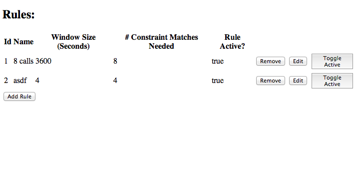

Author: Aidan Nagorcka-Smith
Student ID: 316748
Email: aidann@student.unimelb.edu.au
This project allows matching user-determined rules against a stream of Call Data Records (CDRs). The rules are defined using a web interface and stored in an in-memory database via a REST API. The stream processing application reads the rules from the REST API and a stream of CDRs from file, checking for rule matches and uploading their details back to the REST API, from where they can be viewed in the web application. Additionally, the stream application calculates statistics about the stream and uploads these data points to the REST API. Statistics can also be viewed using the web application.
The REST API is implemented using the Play! Java framework and is contained in the webapp subdirectory of the project.
HTTP routes are expressed in webapp/conf/routes, mapping HTTP endpoints to the controller and method combination that implement them. Java controllers are implemented in the webapp/app/controllers directory. The Play! application uses hibernate to persist objects to an in-memory database. The database is cleared when the application is started.
The core Java data-structures are shared with the strem application and are implemented in a separate maven-based project, stored in the cdr-models subdirectory of the project.
A REST API was chosen as the central point for the project as it's a standard and straight-forward to implement way to present data resources to a GUI of any type and the stream processing application itself. JSON is a straightforward and universally accepted data interchange format.
Each endpoint resource (denoted below with the placeholder $ENDPOINT) type exposes the following operations, accepting parameters and returning results as JSON:
GET /api/$ENDPOINT: Returns an array containing all current instances of that resource type.GET /api/$ENDPOINT/$ID: Returns a specific instance of that resource with id $ID.
POST /api/$ENDPOINT: Accepts a JSON representation of a new instance of that resource and stores it in the database.PUT /api/$ENDPOINT/$ID: Accepts a JSON representation of that resource and updates the instance with id $ID to have the same values as that resource.DELETE /api/$ENDPOINT/$ID: Removes the instance of the resource with id $ID from the database.The REST API exposes the following end-points:
RuleMatchStatisticsThe following resources are exposed by the REST API.
In the resource data formats number, string and boolean are standard JSON data-types, while [] represents arrays and {} represents objects:
Represents a CDR matching rule which can be created by the user of the web application.
{
id: number,
name: string,
active: boolean,
windowSize: number,
numberOfConstraintMatches: number,
constraint: Constraint
}
A tree structure which allows CDR matching criteria to be expressed.
One of the following:
Evaluates to true if the contents of a given field in the CDR is equal to the specified string.
{
type: "stringEquality",
field: FieldName,
value: string
}
Evaluates to true if either of the child constraints is true.
{
type: "or",
firstChild: Constraint,
secondChild: Constraint
}
Evaluates to true if both of the child constraints are true.
{
type: "and",
firstChild: Constraint,
secondChild: Constraint
}
One of the field names from the CDR specification.
One of the following:
"CDRType""IMSI""IMEI""CallingNumber""CalledNumber""RecordingEntity""Location""CallReference""CallDuration""AnswerTime""SeizureTime""ReleaseTime""CauseForTermination""BasicService""MSCAddress"Represents an individual match of a rule.
{
timestamp: string,
ruleId: number,
imsi: string,
id: number,
callDataRecords: [CallDataRecord]
}
Represents an individual call data record.
{
cdrType: string,
imsi: string,
imei: string,
callingNumber: string,
calledNumber: string,
recordingEntity: string,
location: string,
callReference: string,
callDuration: number,
answerTime: string,
seizureTime: string,
releaseTime: string,
causeForTermination: string,
basicService: string,
mscAddress: string
}
Represents statistics collected from the CDR stream for a one minute tumbling window.
{
id: number,
windowSize: number,
averageCallDuration: number,
callVolume: number,
droppedCallVolume: number,
timestamp: string
}
The web application is implemented using Backbone.js and served from the root of the Play! application that provides the REST API. The files for the application can be found in the webapp/public/javascripts subdirectory of the project.
A client-side Javascript application was chosen as it fits natually with a JSON based REST API and ensures a clean separation between the API itself and the code responsible for acting as the user interface.
The web application is made up of 6 main pages:
The home page is accessible from the at the root of the application and displays buttons which present the rules, matches and statistics pages.
The rules page lists all the rules that are currently stored in the database. Each rule can be deleted or toggled on or off from this page. Clicking on the "Add Rule" button will present the add-rule page, while clicking the "Edit" buttonf or a rule will display the edit-rule page for that rule.

The add-rule page allows for a new rule to be added to the system. It allows the user to set the following properties of a rule:
Clicking the "Save" button will save the rule in it's current state to the database. Clicking cancel will return the user to the list of all rules. All rules default to enabled when saved.
The edit-rule page allows for the same functionality as the add-rule page, but it pre-populated with the data for a given rule and will over-write that data on save.
The matches page lists all the rule matches that have been recorded so far by the stream processing page. Clicking the "Show Detail" button for a given match will display the match-detail page for that match.
The match-detail page displays all the details of a match, including the CDRs that contributed to it.
The statistics page displays statistics for call volume, dropped call volume and average call length recorded across all processed CDRs. Statistics are separated in to 1 minute buckets and displayed once the entire minute has been processed by the stream processing application.
The stream processing application is implemented using the Storm framework and built using mave. It is stored in the streamapp subdirectory of the project.
Storm was chosen because of my familiarity with Java and the extensive tooling available for the development environment. Additionally, it allows for the sharing of the models between both the Stream processing application and the Play! application that powers the REST API.
The following diagram shows the flow of data through the stream processing application.
The RuleSpout polls the rules that are stored on the server and emits two streams, one of updated rules and one of removed rules ids.
Output:
UpdatedRulesStream
{
rule: com.aidanns.streams.project.Rule
}
RemovedRuleIdsStream
{
id: Long
}
The CDRSpout reads lines from a file containing CDRs and parses them, emitting one at a time in a stream of CDRs. The IMSI is emitted as a separate field on the same tuple to allow storm to automatically partition the stream based on this field.
Output:
CallDataRecordStream
{
CallDataRecord: com.aidanns.streams.project.CallDataRecord
IMSI: String
}
Each RuleMatchingBolt is responsible for checking each CDR it processes against every rule currently in the system. When a CDR can potentially contribute to a rule match, it is stored using a priority queue based on the release time of the call it represents until it's window expires, when it is discarded. If a match is detected, a match tuple is emitted from the bolt. The bolt is designed to scale horizontally by partitioning the stream based on IMSI, which identifies an individual user.
Horizontal scaling was chosen as it is a simple and automatable way to add additional bolts to the application. Partitioning a stream based on a single field is an easy to understand and easy to implement method of load balancing.
Input:
UpdatedRulesStream
{
rule: com.aidanns.streams.project.Rule
}
RemovedRuleIdsStream
{
id: Long
}
CallDataRecordStream
{
CallDataRecord: com.aidanns.streams.project.CallDataRecord
IMSI: String
}
Output:
RuleMatchStream
{
match: com.aidanns.streams.project.RuleMatch
}
The StatisticsCalculationBolt stores aggregated statistics for a CDR stream and outputs a summary for every 1 minute of CDRs that are processed.
Input:
CallDataRecordStream
{
CallDataRecord: com.aidanns.streams.project.CallDataRecord
IMSI: String
}
Output:
StatisticsWindowStream
{
Statistics: com.aidanns.streams.project.StatisticsWindow
}
The UploadMatchBolt does a HTTP POST to the api/match endpoint of the REST API for each match.
Input:
RuleMatchStream
{
match: com.aidanns.streams.project.RuleMatch
}
The UploadStatisticsBolt does a HTTP POST to the /api/statistics endpoint of the REST API for each statistics window.
Input:
StatisticsWindowStream
{
Statistics: com.aidanns.streams.project.StatisticsWindow
}
The CDR generation at the spout was limited to varies levels and the average latency between tuple emission from the spout and evaluation by the RuleMatchingBolt over a 30 second run of the application was measured. The measurement was done 5 times for each generation rate.
The test was conducted on a Macbook Air with a 2.0 Ghz Intel Core i7 CPU, 8GB 1600 MHz DDR3 RAM and a SSD. The test maching was under no other significant load at the time of testing. During the test the application was configured with a single CDRSpout and one RuleMatchingBolt.
Note that one anomylous reading of 10 seconds was ommitted from the graph for a generation rate of 10 tuples per second.
Higher throughput rates were generally associated with a lower average latency. One possible explenation of this is that the first tuples run through the application have a particularly high latency, perhaps due to being processed while the appliation is still initialising. It is also possible that context switching away from the running application happens at very low throughputs and this incurs a higher cost when the time comes to process a tuple.
Total tuple throughput in a 30 second run of the application was measured with varying number of rules being evaluated. The measurement was done once at each level of rules.
The test was conducted on a Macbook Air with a 2.0 Ghz Intel Core i7 CPU, 8GB 1600 MHz DDR3 RAM and a SSD. The test maching was under no other significant load at the time of testing. During the test the application was configured with a single CDRSpout, one RuleMatchingBolt and a single rule which was not matched during the run of the application.
An increase in the number of rules being tested generally resulted in a lower throughput. This was to be expected - more computational cost for each CDR means less CDRs will be evaluated in the same ammount of time.
Total tuple throughput in a 30 second run of the application was measured while varying the number of CPUs and rule evaluators assigned to the stream application. The measurement was done once for each {# Rule Evaluators X # CPUs} pair.
The test was conducted using VirtualBox virtual machines running Ubuntu 12.04 on a Macbook Air with a 2.0 Ghz Intel Core i7 CPU, 8GB 1600 MHz DDR3 RAM and a SSD. Each virtual machine was assigned 2GB of ram, with a CPU equivalent to a maximum of 50% of a single core from the underlying Intel processor. Neither the test maching or the virtual machines were under any other significant load at the time of testing.
The increase in throughput was significant, although less than linear as extra CPUs were added to the processing pool for the stream application. The smaller difference between two and three processors was likely due to the fact that the three processors were being simulated on two underlying cores, meaning the results are not representative of a true multi-processor system.
An increase in the number of rule processors did not have a significant impact on the throughput of CDRs. This indicates that either there is already sufficient parallelism obtained from the number of spouts / bolts running in the application, or that there is some other bottleneck in the system (for instance the CDR generation).
There is a variety of improvements that could be made to the software: